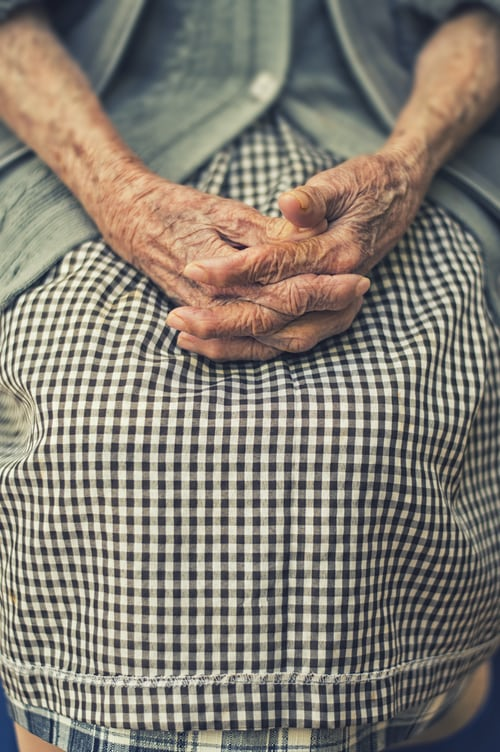

An inevitable part of human life
Infancy, as well as old age, are, mostly referred to as the most delicate stage of human life. They need most of the care and affection. They are physically, emotionally and mentally weak at this age. Thus, the children need to take care of the parents in their old age. But it is a matter of immense grief that nowadays, the children have become insensitive to this duty and are escaping from it.
Thus, they are leaving their parents in the old age home to run away from their obligations. In the old age homes, the older people stay together and are cared for by the old age home staff. They take care of their food, shelter, clothing and medical assistance. There should be no old age homes in any part of the world. Let all the care and affection come from the family itself, which they had once served.
An old age home is a shelter house where the people of older age dwell together with other older people when they have been abandoned by their family members or voluntarily admitted to it to combat loneliness during this crucial stage of life. The old-age house staff is in charge of feeding these senior citizens on time and taking care of their medical needs. They help them cope with the routine by cleaning their clothes and utensils and helping them live the last days of their life without isolation. Also, they conduct various recreational activities, to indulge them in and combat boring lifestyles. They entertain them so that they become happy and jolly. Also, the house inmates stay together, share their experiences and make good bonds with their friends.